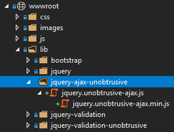
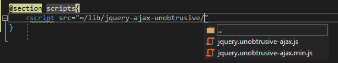
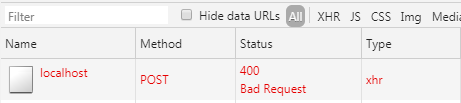
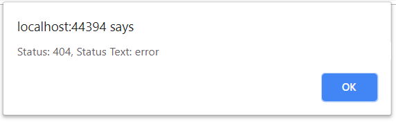
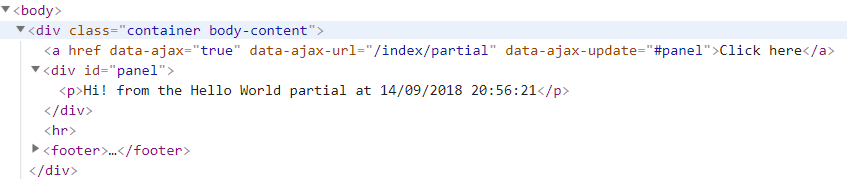
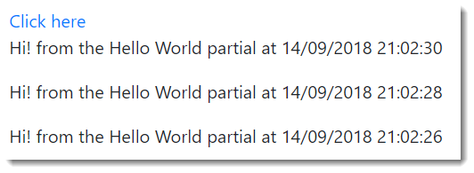
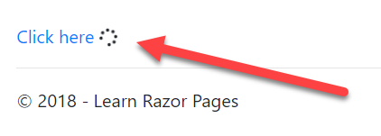

The jQuery Unobtrusive AJAX library has been around for almost 10 years, and was first introduced in ASP.NET MVC 3.0, just as adoption of HTML5 custom data-* attributes was becoming commonplace and supported widely across browsers. It is a small library, 4kb when minified, that makes use of jQuery's AJAX capabilities. It is now part of ASP.NET Core and is hosted at GitHub.
Unobtrusive AJAX, like other unobtrusive libraries, works by examining selected HTML elements for the presence of specific custom data- attributes, and then attaching jQuery's AJAX functions to those elements when they are clicked. In essence, it saves much, if not all of the boilerplate code that you would otherwise have to write to fire an AJAX request and process the response.
You can obtain Unobtrusive AJAX from npm (npm i jquery-ajax-unobtrusive from the Package Manager Console in Visual Studio), or you can use one of the many ways that Visual Studio provides to install it from Nuget. Once you have it, you can create a new folder for it in wwwroot/lib and copy the file(s) there:

Then you can reference it in the page that you want to use it in directly or as a fallback to a CDN-hosted version:

Custom Attributes
The following table details the custom attributes that control the behaviour of jQuery Unobtrusive AJAX:
| Attribute | Description |
|---|---|
data-ajax |
Must be set to true to activate unobtrusive Ajax on the target element. |
data-ajax-confirm |
Gets or sets the message to display in a confirmation window before a request is submitted. |
data-ajax-method |
Gets or sets the HTTP request method ("Get" or "Post"). |
data-ajax-mode |
Gets or sets the mode that specifies how to insert the response into the target DOM element. Valid values are before, after and replace. Default is replace |
data-ajax-loading-duration |
Gets or sets a value, in milliseconds, that controls the duration of the animation when showing or hiding the loading element. |
data-ajax-loading |
Gets or sets the id attribute of an HTML element that is displayed while the Ajax function is loading. |
data-ajax-begin |
Gets or sets the name of the JavaScript function to call immediately before the page is updated. |
data-ajax-complete |
Gets or sets the JavaScript function to call when response data has been instantiated but before the page is updated. |
data-ajax-failure |
Gets or sets the JavaScript function to call if the page update fails. |
data-ajax-success |
Gets or sets the JavaScript function to call after the page is successfully updated. |
data-ajax-update |
Gets or sets the ID of the DOM element to update by using the response from the server. |
data-ajax-url |
Gets or sets the URL to make the request to. |
The following example shows a form with the minimum attributes required to convert to an AJAX submission:
@page
@model IndexModel
<form method="post" data-ajax="true" data-ajax-method="post">
Name: <input type="text" name="name" /><br>
<input type="submit"/>
</form>
There is no action specified, so the form values will be posted to the URL of the page where they can be processed in an OnPost handler. Note that the form's method attribute is specified as post, along with the custom data-ajax-method attribute. In the absence of an action attribute being applied this is necessary to ensure that the request verification token hidden field is generated and included in the form. Without this, form posts will result in a 400 Bad Request status code because they will fail the request verification test:

The data-ajax-confirm attribute takes a string representing the message to display in a confirm prompt to users before the form is posted:
<form method="post" data-ajax="true" data-ajax-method="post" data-ajax-confirm="Are you sure?">
Name: <input type="text" name="name" /><br>
<input type="submit"/>
</form>
Callback functions
When an AJAX request is made using jQuery, a jqXHR object is returned. This is made available to callback functions that you specify via the data-ajax-complete, data-ajax-success and data-ajax-failure attributes.
The next example shows how to access the jqXHR object via a parameter to the callback function:
@page
@model IndexModel
<form method="post" data-ajax="true" data-ajax-method="post" data-ajax-complete="completed">
Name: <input type="text" name="name" /><br>
<input type="submit"/>
</form>
@section scripts{
<script src="~/lib/jquery-ajax-unobtrusive/jquery.unobtrusive-ajax.min.js"></script>
<script>
completed = function (xhr) {
alert(`Hi ${xhr.responseText}!`);
};
</script>
}
The PageModel includes a bound property representing the name that is posted and returns it back as a response:
public class IndexModel : PageModel
{
[BindProperty]
public string Name { get; set; }
public IActionResult OnPost()
{
return Content(Name);
}
}
When the AJAX post completes (successfully or otherwise), the completed function is called with the jqXHR object as a parameter. The response body is available in the responseText property.
The next example shows how to catch errors using the data-ajax-failure attribute:
@page
@model IndexModel
<form method="post" data-ajax="true" data-ajax-url="/notfound" data-ajax-method="post" data-ajax-failure="failed">
Name: <input type="text" name="name" /><br>
<input type="submit"/>
</form>
@section scripts{
<script src="~/lib/jquery-ajax-unobtrusive/jquery.unobtrusive-ajax.min.js"></script>
<script>
failed = function (xhr) {
alert(`Status: {xhr.status}, Status Text: {xhr.statusText}`);
};
</script>
}
In this case, the post results in a 404 not found error, details of which are displayed in a browser alert:

Partial Updates
The data-ajax-update attribute is used to specify the DOM element that should be updated with the response. The value passed to it is a standard CSS selector. If multiple elements match the selector, the first matching element will be updated.
In this example, the attribute is attached to an anchor element. The click will be intercepted by jQuery and managed asynchronously:
@page
@model IndexModel
<a href="" data-ajax="true" data-ajax-url="/index/partial" data-ajax-update="#panel">Click here</a>
<div id="panel"></div>
The URL is a named handler method in the Index PageModel:
public class IndexModel : PageModel
{
public IActionResult OnGetPartial()
{
return new PartialViewResult {
ViewName = "_HelloWorldPartial",
ViewData = this.ViewData
};
}
}
The content of _HelloWorldPartial.cshtml is just one line:
<p>@ViewData["Message"] from the Hello World partial at @DateTime.Now</p>
When the link is clicked, the content is placed in the div with the id of panel:

If you click the link again, the existing content will be replaced with the new response. That is the default behaviour when the data-ajax-mode is not specified. If you want to insert the new content so that it appears before the existing content, set the data-ajax-mode value to before:
<a href="" data-ajax="true" data-ajax-url="/index/partial" data-ajax-update="#panel" data-ajax-mode="before">Click here</a>
Now the response generated from subsequent clicks appears above the existing content:

Setting the data-ajax-mode attribute to after will result in the response being appended to any existing content.
Displaying a Loading GIF
Sometimes, as a courtesy to users to let them know that something is happening when an asynchronous operation takes a while to complete, an indication of progress is displayed. This usually takes the form of an animated gif image, or an animated font. The data-ajax-loading attribute specifies the element that should be displayed while the AJAX operation is taking place. The data-ajax-loading-duration attribute takes a value in milliseconds. This is used to determine how long it takes to make the loading element visible and then to hide it. The loading element slides down and to the right when becoming visible. If no value is specified, the default is 400.
In this example, a spinner from the FontAwesome font collection () is used to show progress. It has its display property set to none initially. jQuery will remove that setting before the request is sent, and then reapply it once it has completed (regardless of success).
<a href="" data-ajax="true" data-ajax-url="/index/partial" data-ajax-update="#panel" data-ajax-loading="#spinner">Click here</a>
<span id="spinner" style="display:none;"><i class="fas fa-spinner fa-spin"></i></span>
<div id="panel"></div>
In order to simulate a long running operation, the handler method is altered to include a call to Thread.Sleep:
public IActionResult OnGetPartial()
{
Thread.Sleep(2000);
return new PartialViewResult
{
ViewName = "_HelloWorldPartial",
ViewData = this.ViewData
};
}
This ensures that the animation will be visible for at least 2 seconds:
